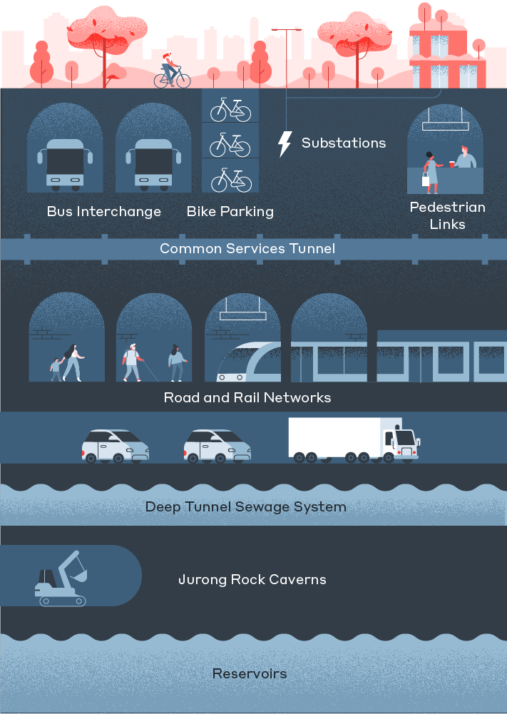

大规模地下空间随城市集约化而生。从地表到深层，交通、市政与储备设施逐层叠加——围绕它的建设、治理与维护，都依赖一套完善的专用通信系统来解决公共服务中的通信挑战。

{{ p.desc }}
按空间结构与功能，采用不同的末端覆盖与接入方式，集中到一个区域节点提供各种用途的信号接入。分区之间彼此独立平行、支持区间漫游——大大降低系统整体瘫痪的风险。
数字化基站强化语音与数据输出，传输全程数字光纤化——把消防、运营、公共安全多张网融合到一套集约化组网里，天生为隧道的长距离与后期扩建而设计。
从城市主干隧道到地下综合体，专网通信在多个标杆项目中稳定运行。
隧道、管廊、地下综合体——集约化分区专网，一次建成、长期可维。